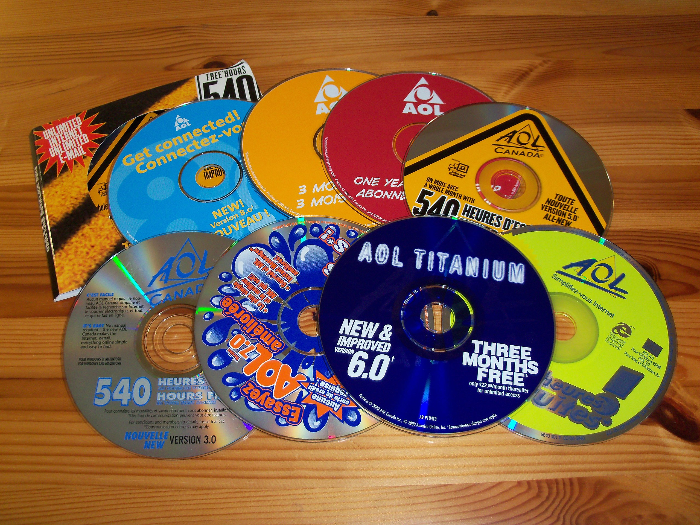
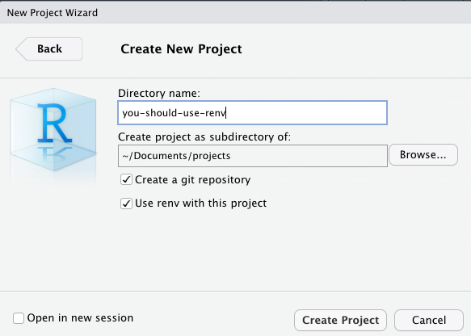

You
should
use
renv.
(probably.)
why
how
what makes a project an R project?
an individual or collaborative enterprise that is carefully planned to achieve a particular aim.
– Oxford Languages
a project ships.

*.Rproj
*.RprojVersion: 1.0
RestoreWorkspace: Default
SaveWorkspace: Default
AlwaysSaveHistory: Default
UseSpacesForTab: Yes
NumSpacesForTab: 2
Encoding: UTF-8
AutoAppendNewline: Yes
StripTrailingWhitespace: YesYou don’t ship your editor.
🙈 I have shipped my editor.
*.Rprojnecessary (if you use RStudio)
but not sufficient
A twelve-factor app never relies on implicit existence of system-wide packages.
It declares all dependencies, completely and exactly, via a dependency declaration manifest.
It uses a dependency isolation tool […] to ensure that no implicit dependencies “leak in”
install_github("tidyverse/dtplyr")install_github("tidyverse/dtplyr")when do you think you
want to discover that you’ve
broken your dashboard?
isolate.
install.packages("renv")
renv::init()or,
.libPaths()renv::install("tidyverse/dtplyr@main")
renv::init(); renv::install()enumerate.
renv::snapshot()renv::snapshot()renv::snapshot()"gitcellar": {
"Package": "gitcellar",
"Version": "0.0.0.9000",
"Source": "Repository",
"Repository": "https://ropensci.r-universe.dev",
"RemoteUrl": "https://github.com/ropensci-org/gitcellar",
"RemoteRef": "main",
"RemoteSha": "5c761b993720ef51aeea81a94f01e34ae0c71c84",
"Hash": "95fe2a4c4002b5d8fd674d460c6af4c1",
"Requirements": [
"R6",
"gh",
"purrr",
"tibble",
"withr"
]
},renv.lock
is the project artifact we’re looking for.
collaborate.
renv::status()renv::status()renv::status()renv::init()
renv::install()
renv::snapshot()
ship
renv::restore()
The quick and dirty approach you took then comes right back at you as a boomerang.
— Edwin Thoen (@edwin_thoen) May 16, 2022
Therefore, ban the concept of one-off altogether. No matter what the asker says, it will have to be done again, always!
3/9
Let’s coalesce on a project standard.
Use renv.
Kevin Ushey